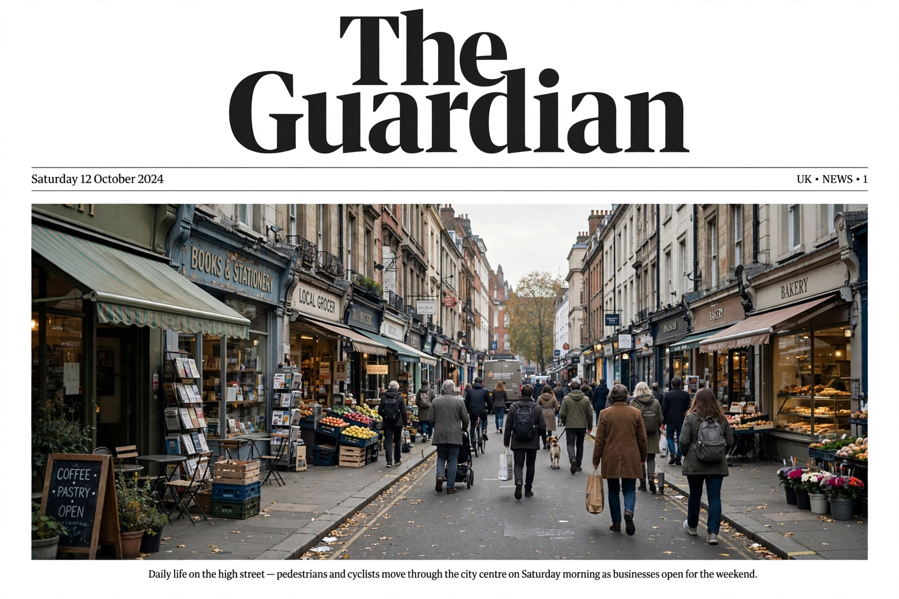

Top stories
Top stories, with a supporter appeal

The Guardian's homepage uses a distinctive grid with a deep-blue masthead, a lead story with large photography, ordered story 'containers' for news, sport, culture and opinion, and regular appeals asking readers to support its open, independent journalism financially.
Opinion — Comment is Free
Columnists and editorial comment.
Sport
Football-heavy coverage, live blogs and results.
Culture
Film, music, books and art reviews.
World news
International reporting from Guardian correspondents.